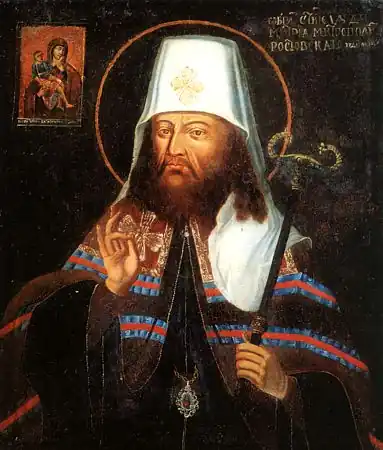
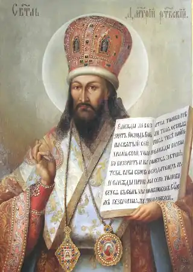

Туптало Данило Савич (Димитрій Ростовський)
1651-1709
святий; письменник, церковний і культурний діяч Святитель Димитрій народився у грудні 1651 року в містечку Макарові на Київщині. Батьками його були сотник Сава Туптало, "честь і слава війська Запорозького", та благочестива Марія. Обоє вони були людьми поважними і побожними. У благочестивому дусі виховували і своїх дітей, з яких, окрім сина Данила (таким було мирське ім’я святителя), ще три доньки стали черницями. Через суворі козацькі будні батько не міг приділяти синові належної уваги, а тому доглядати й виховувати дітей доводилося Марії Михайлівні самотужки. Під впливом доброї і чуйної материнської душі зростав Данило у страху Божому та благочесті. Згодом родина Тупталів переїхала до Києва, а коли Данилу виповнилося одинадцять років, його віддали на навчання до Києво-Могилянської колегії. Вроджений хист, старанність, невтолиме прагнення знань невдовзі виокремили його з кола однолітків. У класах риторики він виділявся талантом віршування. Під орудою знаменитого проповідника, полеміста й богослова Іоаникія Галятовського Данило блискуче засвоїв ті прийоми та звороти мови, що пізніше нестимуть захоплення слухачам його проповідей, надаватимуть переконливості його аргументам, вражатимуть емоційністю та силою доказів. Виявляючи схильність до науки, Данило водночас відзначався і рев-ністю до життя побожного. Більше того, це згодом переростало в нестримне бажання жити саме таким життям. У 1668 році Данило приймає чернецтво під ім’ям Димитрія в Кирилівському монастирі в Києві з рук свого улюбленого вчителя ігумена Мелетія Дзика, щирого українського патріота, прибічника гетьмана Петра Дорошенка та Київського митрополита Йосифа Нелюбовича-Тупальського, які боролися в той час за незалежність України. Через рік, у березні 1669 року, митрополит Йосиф Нелюбович-Тупальський рукопокладає ченця Димитрія в ієродиякони. Прийнявши чернецтво й ставши духовною особою, Димитрій відновлює своє навчання, перерване у 1665—1669 роках з огляду на тодішні політичні події (відомі в нашій історіографії часи Руїни). Тоді ж він розпочинає і свою літературну діяльність. У сані ієродиякона Димитрій пробув у Кирилівській обителі тривалий час. Двадцять третього травня 1675 року в Густинському монастирі, поблизу Прилук, митрополичий заступник Лазар Баранович, архієпископ Чернігівський, висвятив ієродиякона Димитрія на ієромонаха. Святому мужу виповнилося всього 24 роки, але він на той час був досить обізнаним як у науках, так і у проповідях слова Божого. Познайомившись із ним ближче, переконавшись у глибині й широті його знань, архієпископ запросив Димитрія стати проповідником при Чернігівській соборній церкві. За дорученням Лазаря Барановича святитель почав їздити проповідувати і в інші церкви Чернігівської єпархії, а згодом — і всієї України. На цей період його діяльності припадає і написання першого великого твору — про чудеса, що діялися від чудотворного образу Божої Матері в Іллінському монастирі Чернігова. Ця книга спочатку мала назву "Чуда...", а опісля друкувалася як "Руно орошенноє". З проповідями Димитрій об’їздив не тільки українські землі, але й білоруські. Відомо, що в 1677 році він тривалий час перебував у Слуцьку, звідти виїжджав до інших міст. Мандрував по Волині, жив у Вільні, в Свято-Духівському монастирі. У січні 1679 року повертається в Україну, а в лютому, на бажання гетьмана Івана Самойловича, оселяється в Батурині, тодішній гетьманській столиці. На прохання братії у березні 1681 року призначається ігуменом Максаківського монастиря на Чернігівщині, звідки через рік знову перебирається до Батурина уже як настоятель тамтешнього Миколаївського монастиря. Але вже у жовтні 1683 року добровільно зрікається ігуменства, аби присвятити себе сповна чернечим подвигам та письменницькій діяльності. У травні 1684 року переїжджає до Києва, де на прохання новообраного архімандрита Києво-Печерського монастиря Варлаама Ясинського погоджується стати проповідником при цій святині православ’я. Одночасно архімандрит запропонував ігуменові Димитрію написати "Життя Святих", на що той радо згодився. Над цією працею святитель працював близько 20 років. Різні перешкоди заважали нормальному процесові написання. Так, у 1686 році він мусив знову повернутися до Батурина: очолити, на вимогу митрополита Гедеона Святополка-Четвертинського та гетьмана Івана Самойловича, наміс-ництво тамтешнього монастиря. Святитель продовжує плідно працювати і в липні 1687 року виконує першу частину задуму (місяці вересень — жовтень — листопад), яку й було віддруковано у Києво-Печерському монастирі у 1689 році. У 1692 році залишає ігуменство в Батурині й оселяється в окремій келії для спокійної письменницької праці. У 1693 р. була готова друга частина роботи (місяці грудень — січень — лютий), яка побачила світ у 1695 році. З червня 1694 р. до січня 1697 р. святителю довелося виконувати ще й адміністраторські функції, бути настоятелем Глухівського монастиря, а з січня до червня 1697 р. — ігуменом Кирилівського монастиря в Києві. У липні 1697 року, на прохання архієпископа Івана Максимовича, Димитрій переїжджає до Єлецького Чернігівського монастиря й одержує титул архімандрита, а незабаром стає ще й архімандритом Новгород-Сіверського Спаського монастиря. Попри численні справи, що постійно відволікали його від основної письменницької праці, святитель продовжує натхненно трудитися, і в 1700 році у Києві виходить третій том "Життя Святих" (місяці березень — квітень — травень). За двадцять років Димитрію довелося бути настоятелем багатьох монастирів в Україні, переїздити з місця на місце. Пояснюється це тим, що різні обителі хотіли бачити його своїм настоятелем і мати в його особі доброго проповідника та наставника, хоч сам для себе святитель ніколи не шукав слави чи почестей. Наступний, 1701, рік став у житті святителя Димитрія переломним. За наказом царя Петра I його викликають до Москви, і в лютому він назавжди залишає Україну. У березні 1701 року його висвячують на митрополита Тобольського, але через хворобу він не зміг виїхати до Сибіру, а вже в січні 1702 року його перепризначують на кафедру митрополита Ростовського в Росії. На цій старовинній єпископській кафедрі, яка за княжих часів входила до складу Київської митрополії і на якій одними з перших єпископів були українці, святі Леонтій і Ісайя, пробув святитель понад сім років. Тут він завершує свою подвижницьку роботу над виданням і видруковує у 1705 році четвертий том "Життя Святих" (місяці червень — липень — серпень). Але неспокійне серце не хотіло знати спочину. Димитрій розпочинає писати "Літописець" — рід біблійної історії, яку, однак, закінчити не встиг. Підірване здоров’я святителя не змогло справитися з черговим нападом недуги, особливо частих в останні роки. Димитрій упокоївся в ніч з 27 на 28 жовтня 1709 року, за молитвою, стоячи на колінах. Так молитва, що супроводжувала святого все життя, не полишила його і в час смерті. Серед усіх праць святителя чільне місце займають "Життя Святих", або "Четьї Мінеї" (місячні читання). Вихід у світ цього повного видання стало визначною подією в житті нашої церкви і прославило його ім’я в усьому християнському світі. Беручись до цього задуму, святитель відчував не тільки величезну відповідальність, а й навіть деяку розгубленість. Виникало бажання взагалі відмовитися від нього, лише побоювання гріха неслухняності зупиняло і, врешті, змусило підкоритися вимогам Варлаама. З надіями і молитвами на Божу допомогу, з внутрішнім трепетом, у червні 1684 року приступив Димитрій до свого подвигу. Його душа, розум, творча уява були переповнені образами святих, життєписами яких займався. Віщі сни, видіння, яких сподоблявся, підтримували й спрямовували його на подвижницькому шляху творення. Якось він згадував, як пам’ятного понеділка 10 серпня 1685 року він, зачувши благовіст до заутрені, не схопився звично до служби, а, підпавши під якусь непереборну сонливість, проспав аж до читання Псалтиря. І весь цей час перед ним стояло видіння: здавалося, що доручено йому було приглядати за якоюсь печерою, де покоїлися святі мощі. Оглядаючи зі свічкою труни святих, побачив він там і святу великомученицю Варвару. Приступивши ближче до труни, узрів її лежачою на боці, а на віку труни помітив якусь гнилизну. Бажаючи вичистити труну, витяг мощі її з раки, переклав їх на інше місце. Очистивши раку, знову підійшов до святих мощей і, підхопивши їх на руки, переклав на попереднє місце, але раптом побачив, що свята Варвара жива. "Свята великомученице Варваро, добродійнице моя! Умоли Бога про гріхи мої!" — вигукнув Димитрій. Свята відповідала йому так, мовби мала якісь сумніви стосовно нього: — Не знаю, чи зможу умолити, бо ж молишся ти по-римськи... Почувши слова ці, святий захвилювався й засмутився, бо, надаючи особливої уваги письму, дещо послабив він молитовне правило, молився коротко й зрідка, як римлянин. Отже, то було не просте нагадування, а своєрідний наказ повернутися до звичного благочестивого життя. Ще не один раз по тому з’являлися образи святих, які дивним чином не давали йому занепасти духом, наснажували й додавали сил та розуміння для успішного завершення вікопомної праці. ** Азбука духовної премудрості: — Духовне, коли роздається, ще більше примножується. — Любов душі до духовних висловів служить знаком здоров’я її. — Спокою душі ніщо так не служить, як свобода від турбот і суєти. — У душі немилостивій Бог не перебуває. — Самих справ — без слова — мало для научання. — Корінням і джерелами справ служать роздуми. — Добрі діла будуть тоді великими, коли ми не вважаємо їх великими.